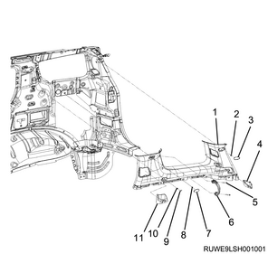
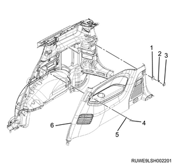
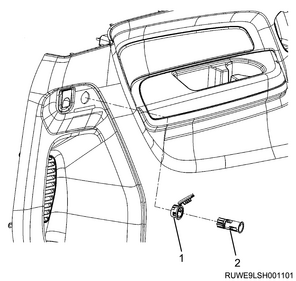

Rear quarter glass installation (All models)
1. Rear quarter glass installation
1. Clean the rear quarter glass using the unleaded gasoline.
2. Clean the body panel using the unleaded gasoline.
Note
- Clean the bonding surface of the quarter window glass.
- Wipe off the caulking material remaining on the body with a soft cloth and lead-free gasoline.
3. Apply the primer to the body.
Note
- Apply Sunstar BP-901 or equivalent to the bonding surface on the body side.
- Primer application width: Top 23 mm {0.91 in} or more, Side 20 mm {0.79 in} or more, Bottom 25 mm {0.98 in} or more.
4. Install the spacer to the body.
Note
- Use a new spacer.
- Spacer
5. Apply the primer to the rear quarter glass.
Note
- Apply Sunstar penguinseal #560 or equivalent to the bonding surface of the rear quarter glass side.
- The primer application width from the end of the rear quarter glass is 18 mm {0.71 in} to 26 mm {1.02 in}.
- Sealing agent
- Application location of the primer
- 10 mm {0.39 in}
- 11 mm {0.39 in}
- 8 mm {0.31 in}
- 5 mm {0.20 in}
- 18 mm {0.71 in} or more
6. Apply the sealing adhesive to the rear quarter glass.
Note
- When using an air spray gun, air pressure must be kept lower than the specified value.
Specified air pressure： 147 to 294 kPa { 1.5 to 3.0 kgf/cm2 / 21 to 43 psi } Or less
Note
- After the primer completely dries, apply the sealing agent, Sunstar penguinseal #560 or equivalent, along the edge of the rear quarter glass so that the sealing agent forms a bonding area of 20 mm {0.79 in} at the right lower section of the rear quarter glass.
- Primer application area
- 20 mm {0.79 in}
- Spacer
Caution
- After applying the primer, leave it for at least 1 minute for air drying.
- Bonding must be accomplished within 5 minutes after the sealing material is applied.
7. Install the rear quarter glass to the body.
Note
- Install the rear quarter glass to the entire border of the body panel that has been applied with sealing agent.
- Insert the clip into the body panel mounting hole and install the rear quarter glass by pressing it into the panel.
- Mounting hole
- Clip
8. Clean the body panel using the unleaded gasoline.
Note
- Wipe off the protruded sealing material with lead-free gasoline and a soft cloth.
- Keep the bonding surface temperature at the following temperature for 24 hours.
Heating temperature： 20 to 30 ℃ { 68 to 86 °F }
Note
- Check that there is no water leakage from the rear quarter glass.
2. Upper quarter trim cover installation
1. Install upper quarter trim cover to the quarter panel.
Note
- Tighten the screw and install the cover.
2. Install the bezel to the quarter panel.
Note
- Insert the seat belt through the opening in the bezel.
3. Install the seat belt lower anchor bolt to the floor.
Note
- Install the 2nd and 3rd seat belt lower anchor bolts
Tightening torque： 46 N・m { 4.7 kgf・m / 34 lb・ft }
4. Install the assist grip to the quarter panel.
Tightening torque： 7 N・m { 0.7 kgf・m / 62 lb・in }

- Upper quarter trim cover
- Screw
- Cover
- Bezel
- Screw
- Assist grip
- Cover (For vehicle with curtain airbag)
- Screw (For vehicle with curtain airbag)
- Cover
- Screw
- Bezel
3. Lower quarter trim cover installation
1. Install the lower quarter trim cover to the quarter panel.
Note
- Tighten the screw and install the cover.
2. Install the luggage hook to the quarter panel.
Tightening torque： 8 N・m { 0.8 kgf・m / 6 lb・ft }

- Luggage hook
- Screw
- Cover
- Cover
- Screw
- Lower quarter trim cover
3. Install the accessory socket to the lower quarter trim cover.
Note
- This procedure is applicable to the vehicle with the accessory socket.

- Cover
- Accessory socket
4. Sill plate installation
1. Install the sill plate to the floor.
Note
- Install the rear sill plate.

- Rear sill plate
5. Luggage rear trim installation
1. Install the luggage rear trim to the floor.

- Luggage rear trim
6. Tail gate weather strip installation
1. Install the buffer to the body.
Note
- Before installing the weather strip, install the buffer to the lower notch at body flange so as not to damage the painted surfaces.

- Buffer
- Weather strip
2. Install the tail gate weather strip to vehicle.

- Tail gate weather strip